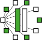

 Welcome to DiVinE!
The goal of Distributed Verification Environment project DIVINE is to provide an extensible framework to support verification and analysis of large-scale computer systems on parallel architectures. DIVINE is a collection of state-of-the-art verification algorithms incorporated into a several tools which are as easy to install as most sequential tools.
DIVINE accomodates also two domain specific tools. BIO-DIVINE is intended for analysis of complex biological systems, PROB-DIVINE is a tool for verification of finite-state probabilistic systems. DIVINE offers specifically tailored versions for distributed-memory architectures (like clusters of workstations) - DIVINE CLUSTER, for shared-memory architectures (like multi-core machines) - DIVINE MULTI-CORE, for General Purpose GPUs - DIVINE CUDA, and for I/O efficient usage of external memory devices (like parallel hard-disks) - DIVINE I-O.
DIVINE is free for non-profit use, e.g. for evaluation, research, and teaching purposes.